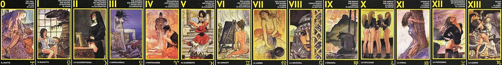
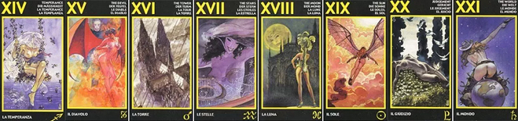

Масть огня формирует агрессивный подтекст влияния. Человек, о котором говорит влияние, демонстрируемое Огнем, может проявлять аномальную агрессию, возбудимость, неприятие норм окружающего мира или отдельных людей. Масть огня в большинстве случаев раскрывает характеристики порчи, инвольтаций, проклятий и наказаний. По огню редко «проходят» действия Любовной магии.
Повторимся, нижеприведенные значения карт Младшего Аркана Таро используются только в детализации расклада «Тайные враги» и нигде больше.
Туз указывает на энергетический удар – это может быть само воздействие, но может быть и банальная ссора. Уровень такого влияния минимален.
Двойка – неверная точка зрения, ошибочная позиция. Человек сам идет по пути к своей ошибке.
Тройка – конфликт интересов. Человека что-то задело, затронуло его личные интересы.
Четверка – изоляция человека, ограничение в движении и поступках.
Пятерка – гиперактивность и неумение контролировать свое поведение привело в сложившуюся ситуацию.
Шестерка – порча или наказание. Человек находится в рамках собственного поведения.
Семерка – корректирующее магическое или человеческое действие. Человек находится в плену стороннего влияния.
Восьмерка – наказание. Негативное событие в жизни человека является заслуженным наказанием за его поведение.
Девятка – человек страдает за правду, но она никому не нужна.
Десятка – болезнь или физический дефект как реализация влияния.
Вестник – дезориентация. Человек теряется в мыслях и не может качественно концентрироваться на процессе.
Всадник – давление со стороны конкретного человека, т. е. это начало влияния.
Дама – сильная, целеустремленная, волевая женщина. Это может быть как «автор» магического, так и фактического действия. В любом случае этот человек РЕАЛЬНО влияет на судьбу того, кто нас интересует.
Король – сильный, целеустремленный, волевой мужчина. Это может быть как «автор» магического, так и фактического действия. В любом случае этот человек РЕАЛЬНО влияет на судьбу того, кто нас интересует.
Вода – эта масть всегда демонстрирует влияние на человеческие эмоции. Здесь все не просто, поскольку кубки могут «стать частью» действия Любовной магии, и в то же самое время могут говорить о внутреннем эмоциональном дискомфорте человека.
Туз – новые чувства, эмоции, интерес как форма отклика на внешнее влияние. Это может быть и ответный импульс на чей-то флирт, внимание, но может быть и начальной стадией действия любовной магии.
Двойка – взаимоотношение или взаимодействие с человеком, которое меняет эмоциональную картину восприятия.
Тройка – человек искажает собственное восприятие, пытаясь защититься от реальных чувств. Подмена понятий в эмоциональной сфере.
Четверка – замкнутость, эмоциональная подавленность. Разочарование как АНОМАЛИЯ – одна из форм реализации действия в области сердечной чакры .
Пятерка – активное выражение своих чувств, признание, вызванное внешними факторами. Человека толкают на этот поступок.
Шестерка – эмоциональная растерянность, ностальгия о прошлом как форма личной дезориентации в отношениях. Так может выглядеть остуда, но так может выглядеть и эмоциональное взросление.
Семерка – новые чувства, новые симпатии, новые увлечения, вызванные внешней стимуляцией.
Восьмерка – разрушение эмоционального комфорта в отношениях. Так выглядит и «путь к разлуке», когда человек разочаровался в своем спутнике, так выглядит и отворот.
Девятка – эгоизм, одностороннее проявление чувств. Магии нет, все связано с тем, что человек хочет удовлетворения только личных эмоций.
Десятка – завершение эмоциональной ситуации и появление новой. Влюбленность, любовь и чаще всего «аномального» характера.
Вестник – управление человеком за счет эмоциональных посылов: «Ты самый умный! Ты самый сильный!» и т. д.
Всадник – эмоциональное подавление человека. Часть магического действия Любовной магии или подавление собственных чувств под влиянием внешних факторов.
Дама – любвеобильная, чувственная, эмоциональная женщина. Это может быть как «автор» магического, так и фактического действия. В любом случае этот человек РЕАЛЬНО влияет на судьбу того, кто нас интересует.
Король – любвеобильный, чувственный, эмоциональный мужчина. Это может быть как «автор» магического, так и фактического действия. В любом случае этот человек РЕАЛЬНО влияет на судьбу того, кто нас интересует.
Воздух демонстрирует влияние на мысли людей. По сути, все магические воздействие затрагивают мысли человека и его способность корректно оценивать происходящее. Но в первую очередь этим «славятся» проклятья и наказания: «Когда Бог хочет наказать человека, он лишает его разума». Также важно отметить, что при наличии магического влияния, которое искажает мысли человека, это отражается на «поведении воздуха» – привычной логической и поведенческой схемы человека.
Туз – ошибочное поведение, неверные мысли, продиктованные внешними обстоятельствами.
Двойка – запутанность, нерешительность, непонимание. Распутье или выбор, которые человек НЕ ДОЛЖЕН совершать.
Тройка – иллюзорное мнение о том, что существует успешное движение ситуации. Заблуждение, которое кем-то внесено.
Четверка – кара в ситуации или обстоятельствах как форма реализации наказания.
Пятерка – человек находится в шаге от бездны. Он вот-вот упадет в пропасть. Несмотря на то что это переносный смысл слова, в реальности его ждет масса неприятностей.
Шестерка – родовые аномалии. Давление рода, родовые дефекты и даже родовое проклятие – все зависит от дополнительных карт.
Семерка – человеку кажется, что у него появился шанс все исправить. Человек идет на поводу и чужих интересов, считая, что это его собственные.
Восьмерка – судорожные попытки исправить ситуацию, выбраться из зависимости. В большинстве случаев это ошибка.
Девятка – конфликт с окружающими, порожденный сторонним влиянием. Так часто выглядит рассорка или начало действия отворота.
Десятка – человек полностью погружен в свои эмоции и не воспринимает влияния окружающего мира. Своего рода «эмоциональный колпак», который может быть вызван как влияниями внешнего мира, так и внутренним конфликтом .
Вестник – внесение чужих мыслей, идей, стремлений в голову человека, манипуляции.
Всадник – реализация внешнего влияния с целью дестабилизации человека. Чаще всего так выглядит провокация.
Дама – давление со стороны женской составляющей рода. Чаще всего это мать или сестра.
Король – давление со стороны мужской составляющей рода. Чаще всего это отец или брат.
Земля – это реализация влияний, преследующих материальную выгоду или реализующихся в физическом плане и в реальных процессах. В Земле почти нет Любовной магии, но мотивы к ее применению часто находятся на земле – выгода, корысть, расчет.
Туз – получение денег, которые являются «подкупом» в той или иной степени. Это управление деньгами, стремление получить что-то за деньги.
Двойка – высока вероятность потери денег. Но при этом нужно сказать, что потеря будет «не в пустоту» – кто-то теряет, но кто-то, стоящий рядом, находит.
Тройка – подвох, «подстава». Попытка вынудить человека на ошибочный шаг. Искушение.
Четверка – порча на деньги. Сложное финансовое положение из-за постоянных ошибок.
Пятерка – подкуп. Мнение человека «затуманено» деньгами.
Шестерка – рука помощи, которая тянет в бездну.
Семерка – финансовый крах, удар.
Восьмерка – тотальное невезение.
Девятка – человек не учится на ошибках прошлого и попадает в неприятную ситуацию вновь.
Десятка – жертва, крупная потеря, которая дезориентирует человека.
Вестник – денежная «морковка». Управление человеком с позиции корысти или выгоды.
Всадник – попытка завладеть деньгами человека.
Дама – человек, ставящий вопросы выгоды и материального благополучия превыше всего. Делец, «торгаш» – это может быть как «автор» магического, так и фактического действия. В любом случае этот человек РЕАЛЬНО влияет на судьбу того, кто нас интересует.
Король – человек, ставящий вопросы выгоды и материального благополучия превыше всего. Делец, «торгаш» – это может быть как «автор» магического, так и фактического действия. В любом случае этот человек РЕАЛЬНО влияет на судьбу того, кто нас интересует.
0 ШУТ
На этой карте изображён деревянный Буратино. Он блаженствует на коленях играющей с ним ласково Мальвины. Мальвина красива, а он уродлив. Что за волшебство создало этот странный союз? Везение это или подарок на день рождения? В любом случае, союз непрочен. Сегодня Мальвина поиграет с забавным деревянным человечком, а завтра выкинет надоевшую ей игрушку. Но вряд ли блаженствующий Буратино понимает такую простую истину. И карта с его изображением сообщает о том, что один из партнеров потерял голову от чар другого, о приятных сюрпризах для него, неожиданностях, удивлении.
Непосредственность, спонтанность, беззаботность, открытость. Наивность, доверчивость, любознательность, легкомысленность, инфантильность. Внутренний ребенок. Часто карта указывает на начало отношений. Либо на такую связь, которая не отличается прочностью, поверхностна. Один из партнеров играет, манипулирует, не задумываясь, а второй - излишне ему доверяет, как ребенок. Игра, отношения без серьезных намерений, не близкие, без глубины чувств. Карта не показывает прочности отношений, но и не предвещает ничего страшного - даже если отношения не сложатся, трагедии никто не ощутит - все достаточно мило и беззаботно, по-детски.
Чувства: Любви здесь нет, есть только легкая игра, отношения без обязательств и ответственности.
1 МАГ
Обычно эта карта символизирует мужчину с активной жизненной позицией. В данной колоде изображение Мага показывает, что умение общаться с естественными силами природы присуще и женщине. Очаровательная брюнетка выступает здесь в образе техника, ремонтирующего стального монстра, который по виду напоминает древних драконов. Он – добытчик и "каменная стена", берегущая нежную женщину от опасностей мира. Она его создала таким, ибо ей известен некий "рычаг", делающий его покладистым и послушным её воле. Это половой орган, единственное, что в нём осталось от изначальной природы. Не будь его, она вряд ли была бы волшебницей. И посвященная ей карта часто говорит об интеллекте, уме, порой сообщает о преобладании в личностных отношениях активности одного из партнеров, возможном подавлении им другого.
Лидерство, инициатива, деятельность, предприимчивость, воля, самообладание, решительность. Мастерство, интеллект, творчество, талант, успех, авторитетность. Это отношения не на равных - кто-то умно, уверенно и умело, со знанием дела, манипулирует другим. Он исследует, экспериментирует, управляет партнером и отношениями. Привык в жизни рассчитывать только на себя и свои способности, сам выстраивает свою жизнь. Большое значение придает разуму, логике, а не чувствам. А второй партнер - позволяет ему собой управлять, добровольно подчиняется, признает за ним более сильную и опытную личность, и чувствует себя при этом хорошо, но... если давление будет слишком велико, может и взбунтоваться, себя уничтожить не позволит.
Чувства: Чувства подавляются и управляются логикой, подвластны рассудку. Это не любовь, а манипулирование сексуальностью, или чем-либо другим, самоутверждение за счет партнера. Либо, с другой стороны - полное подчинение партнеру.
2 ЖРИЦА
Нередко образом Жрицы олицетворяется в раскладе конкретная женщина, обладающая какими-либо мистическими способностями, склонностью к религии. В "Эротическом Таро Манары" на этом Аркане изображена монахиня. Она стоит перед иконой, демонстрируя в некой экзальтации своему "грядущему жениху" непорочность, девственность. Именно эти качества женщины, а так же длительное ожидание ею своего избранника может символизировать Аркан Жрицы. Однако монахиня на рисунке экзальтированна, фантазия унесла её в другие сферы реальности. Мы даже не смеем сказать о том, что происходит там! Но там творится в тайной мистерии будущее нашего мира. Поэтому описываемая нами карта способна утверждать о – возможно, и неосознанной – ворожбе на отношения или любовь.
Попытка осознания себя, чувствительность, внутренний голос, интуиция. Зарождение желания, но пока не понятно - что это и что с этим делать. Загадочная, непонятная, но соблазнительная неизвестность манит, но мешают какие-то запреты, социальные нормы. Эта карта может указывать на тайные отношения, на что-то скрытое, неизвестное. Либо же это связь, которую хотят сохранить в тайне. Существует конфликт между желаниями и нормами приличия, это мешает развитию отношений, раскрытию сексуальности.
Чувства: Чувствам мешает множество комплексов, зажатость, моральные запреты. Любит ли - не знает, это пока тайна. Однако, любить себе не позволяет. В сексе и чувствах - незрелость, неопытность, девственность, целомудрие, неуверенность.
3 ИМПЕРАТРИЦА
Активная роль "слабой" женщины выражена в Аркане Императрицы. Героиня карты уверена в себе и прекрасна. Мы видим, как вокруг неё вращается мглистое, но сияющее звёздное небо. А она с растрёпанными чёрными волосами сидит на кубе, который символизирует землю. Обнажённые формы подчеркивают совершенную красоту Хозяйки. Перед ней склонился мужчина, поверженный её земной красотой. Он искренен в своём поклонении женщине. Карта говорит о женственности, в которой таится масса потенциальной энергии, об искренности в проявлении чувств.
Великая Женственность, достойная восхищения. Рост, рождение нового, жизненная сила, сексуальность, беременность, материнство, раскрытие способностей, развитие. В раскладе эта карта изображением женщины всегда показывает позицию женской фигуры в исследуемых отношениях, а изображением мужчины - мужскую фигуру. Мужчина- в восторге перед женщиной, ее красотой и женской силой. Преклоняется и восхищается ею, как Идеалом. Он относится к ней как к очень важной женщине в своей жизни. А его партнерша - полна чувства собственного достоинства, ощущения своей силы, привлекательности и сексуальности, но сосредоточена больше на себе. Она счастлива и довольна от поклонения. Более того, считает это само собой разумеющимся. В этих отношениях тон задает женщина, а мужчина - в ее полной власти. Карта может говорить о появлении и развитии чего-то нового в этой паре, или, если отношений пока нет - о новых знакомствах, и довольно перспективных.
Чувства: Определенно - любовь есть. Более того, серьезное чувство, обретение Идеала. Любовь здесь больше у мужчины, а женщина принимает это с полным удовлетворением. В позиции будущего карта указывает на хорошие перспективы в отношениях, но не известно - надолго ли?
4 ИМПЕРАТОР
Отсутствие понимания символизирует этот Аркан в данной колоде. На карте изображена отчаявшаяся молодая женщина, сидящая на камне. Рядом с ней в образе средневекового рыцаря стоит, опершись на меч, Император. Он олицетворяет дела, правила и законы. И женщина вынуждена подчиняться им. Поэтому она закутала своё тело в неуютный для неё плед. Вокруг много воды (что, как мы помним, является выражением сексуальности, чувств). Император на карте как бы появляется из воды. Но эта вода, имея красный агрессивный цвет, не утоляет жажду. Так карта олицетворяет мужскую бесчувственность, подавление авторитетом, а порой – и женскую материальную зависимость, женские секреты, их тайные любовные приключения.
Стабильность, надежность, дисциплина, порядок, последовательность, сила воли. Мужественность, воля, власть, руководство. Патриархат. Если вы находитесь в роли Сурового Рыцаря (даже если вы - женщина) - то в отношениях занимаете позицию властного, строгого, упрямого, негибкого и довольно холодного, но очень сильного человека, лидера. Второй партнер - в полном подчинении перед вами, и, честно говоря, находит в этом даже удовольствие, любит сильных и склонен к жертвенности и ведомости. Хотя подавлен и испытывает страх, но не противится этому. Важно понять - кто из двоих занимает какую роль по этой карте. Однако, в этих отношениях отсутствует полное взаимопонимание и чуткость, есть некий порядок, один доминирует над другим, а остальное отходит на второй план. Прогноз отношений - стабильность, надежность, устойчивость.
Чувства: Любовь здесь может быть, однако не сказать, чтоб здоровая. Нежности, чувствительности, романтики нет. Это может быть болезненная зависимость у одного, и потребность в самоутверждении у второго. Но партнеры явно друг друга "нашли". Человек в роли подчиненного делает это добровольно и ему это даже нравится. Особенно хорошо, если это - женщина, тогда карта показывает, что она нашла свой Идеал, сильного мужчину.
5 ЖРЕЦ
О склонности человека к условностям, к осторожности, готовности осудить обратные стороны вещей говорит Аркан Жреца в этой колоде. На карте изображён кардинал, с осуждением изгоняющий блудницу из храма. Её неприличный вид не позволяет ей по канону присутствовать на мессе. Таким образом, Аркан Первосвященника символизирует необходимость соблюдения формальностей, правил приличия, законов субординации или иерархии.
Сильное неравенство, неадекватность. Конфликт между открытостью, вплоть до распущенности, неадекватной демонстративности - и ограничениями, вплоть до ханжества и догматизма. Противостояние мировоззрений и моральных ценностей, нравственных представлений. Социальное несоответствие, несовпадение интересов, взглядов. Отношения слишком разных людей, которые не подходят друг другу. Кто-то из партнеров ведет себя нецелесообразно ситуации, не чувствует - что можно, а чего делать нельзя, за что подвергается осуждению и строгому порицанию вторым партнером. Который в своих представлениях является довольно костным, консервативным, критичным, негибким, и даже фанатичным человеком. Он может быть субъективен, ограничен в своем мировосприятии, но при этом уверен в своей правоте, строго придерживается "буквы закона", того, к чему привык, чему его учили. Это конфликт двух крайностей. В позиции прогноза отношений может указывать на возможность того, что они могу быть, но только при условии, что роли будут четко распределены. Союз сложный.
Чувства: Любви нет. Чувство неадекватности. Ощущение неловкости. Конфликт, осуждение.
6 ВЛЮБЛЕННЫЕ
На карте изображён художник в своей мастерской, он выполняет обычную для себя работу – рисует. Этой работе способствует вдохновение. Оно исходит от натурщицы, сидящей на постели перед маэстро. Само по себе её молодое обнажённое тело не впечатлило прихотливого живописца. Поэтому на теле девушки появились следы от ударов розгами. Карта символизирует насыщенные эмоциями отношения, а порой и будоражащие душу аффекты – любовь зла…
Любовь, верность, радость от отношений. Свобода действовать по велению сердца. Интенсивность чувств, накал страстей. Отношения устойчивы, люди нуждаются друг в друге, и находятся вместе только по доброй воле, по любви. Но это может быть и ситуация выбора, в пользу чувств. Это и испытание любовью, когда через страдания получается понять, что есть любовь. И только через жертвование чем-то приходит в жизнь настоящий союз. Например, через жертвование своей свободой. Необходимо понять - кто в паре играет роль Художника, а кто - Натуры. Художник - творческий, эгоистичный, увлеченный своим творением и вдохновлен Музой - Натурой. А она - обожествляет Художника и способна на жертвы ради любви. Они не могут друг без друга. Но в отношениях может присутствовать элемент садомазохизма.
Чувства: Конечно, речь идет о любви. Партнеры составляют единство, дополняя друг друга. Художник более эгоистичен, а натурщица - склонна к самопожертвованию. Мольберт между ними - это указание на то, что даже при наличии любви и привязанности друг к другу, у каждого все равно есть и свой уголок.
7 КОЛЕСНИЦА
Экспрессия, самовыражение присущи карте Колесницы. В любви она говорит об экстаз, достигнутом с помощью другого человека, и, одновременно, о самолюбовании в глазах партнера, умении преподнести себя, продемонстрировать с лучших сторон (самым умным, красивым и прочее).
В "Эротическом Таро Манары" на данной карте изображена оседлавшая кинокамеру женщина. И съёмочный аппарат несёт её в необъятном пространстве. Она мечтательно запрокинула голову, улыбка играет на её устах, а встречный ветер играет с её пеньюаром, частично обнажая крепкое стройное тело. Она выглядит как кинозвезда, имеющая массу поклонников, перспективы. И образом этой кинозвезды карта в гадании сообщает о напористости человека, тщеславии, умении рекламировать себя, достичь высот.
Прорыв, смелость, уверенность. Продвижение вперед, расширение возможностей. Потребность в новом, прилив "свежего ветра", освобождение из плена прошлого, того, что тянуло назад (иллюзий, обид, негатива, наступания на одни и те же грабли и т.д.). И благодаря этому сейчас в отношениях стало возможным движение вперед . Эта карта часто появляется в раскладах, где речь идет об отношениях очень долгих. Может быть и ностальгия по прошлому, но акцент ставится именно на поиске выхода из этого и на прорыве. Бывает так, что есть желание выйти из старой связи, покончить с прошлым. Если связь только начинается, или предстоит новое знакомство, карта свидетельствует о том, что в этом союзе важную роль будет играть прошлый опыт, и необходимо правильно им распорядиться.
Чувства: Чувства есть. Партнеров связывает много общего из прошлого. Ностальгия, потребность и попытка вырваться из грез. Чувствительность, сентиментальность. Сюда подходит выражение "Не ржавеет старая любовь". Однако что-то мешает движению вперед. И необходимо либо перейти на новый уровень в чувствах, освободиться от иллюзий и негативного опыта, либо вырваться из плена ограничивающих отношений.
8 ПРАВОСУДИЕ
Есть нечто большее, чем повседневная жизнь. Порой это большее позволяет действовать, но часто вынуждает принимать какие-то обстоятельства или правила вокруг нас. И подчинение человека законам логики, религии, государства олицетворяет Аркан Правосудие в этой колоде. На карте изображено лицо большеглазой женщины. Она с любопытством и осторожностью выглядывает в "мир" из-за украшенных вязью массивных ворот. На голове восточной красавицы арабский платок, а за её спиной через окно заметен купол мечети. Так карта говорит об устойчивой, сложившейся, правильной, а потому надоевшей жизни. Хочется чего-то большего, но страшно изменить свою жизнь, и человек пока осторожен, возможно, присматривается к кому-то, строит планы на будущее.
Стремление к соблюдению меры, уравновешенность. Руководство правилами и нормами, но при этом не отказываясь от желаний, - разумный компромисс. Взвешивание "за" и "против" и следование порядку, ответственность за свои действия, за последствия поступков. Понимание, что все хорошо в меру. В отношениях, с одной стороны, - интерес и соблазн, с другой - следование порядку вещей, чувству долга - "И хочется, и колется". Есть потребность и желание внести разнообразие в свою личную жизнь, однако при этом ничего в корне не меняя. Часто эта карта выпадает в гаданиях на отношения, где оба партнера, или кто-то из них, - не свободен, связан браком с другим человеком, однако его тянет на приключения. Если речь идет о связи с женатым человеком и вопрос стоит о том, уйдет ли он из семьи, то ответ, как правило такой - не уйдет, но и со связью на стороне рвать не хочет, его все устраивает. Если же это отношения двух свободных людей, то карта говорит о желании приключений. О том, что хочется внести в отношения что-то новое, интересное, не меняя при этом привычный распорядок. В позиции будущего - отношения надолго, может быть и брак.
Чувства: Есть чувства и большой интерес друг к другу, любопытство, влечение. Однако по этой карте человек вряд ли скажет о своих симпатиях, хотя и осознает их. Есть некое препятствие для этого - ситуация требует соблюдения чувства долга.
9 ОТШЕЛЬНИК
Символизируемый девятым Арканом человек, как правило, отвергает пустышку общественного мнения, на которую люди променяли свободное выражение своей сути. И было время, когда (например, во времена создания "Марсельского Таро" ) карта мыслилась как религиозная, но теперь... В "Эротическом Таро Манары" изображён сидящий на берегу реки волк. На звере ещё видны остатки обычной человеческой одежды, но вздыбленная шерсть и острые зубы показывают, что это уже не человек. Озлобленный на других, он одинок. И словно отражение его одиночества, виднеется расположенная напротив него гора. Этим изображением карта Отшельник в раскладе может сказать о переживаниях, о том, что человек отвержен партнером, что полностью ушел в работу, в творчество или медитацию.
Одиночество, уединение, погруженность в себя. Переосмысление. Тоска. В отношениях - отчуждение, холод, одиночество вдвоем. Озлобленность на весь мир, зацикленность на своих проблемах, отчаяние, неудовлетворенность. Ощущение обреченности, пессимизм, ригидность. Комплексы, зажимы. Из-за мрачного восприятия - отказ от любви, непонимание чувств, бегство в одиночество. Аскетичность, чувство ущербности, отверженности, неполноценности. В отношении к партнеру, если такой есть - неприятие, подавленность, и может быть даже ненависть, зависть. Вероятны сексуальные проблемы. Неспособность радоваться жизни. В лучшем случае - попытка пересмотра отношений, переоценка ценностей, желание пока побыть одному, чтобы все обдумать. В позиции будущего отношений - карта неблагоприятна, говорит об одиночестве, даже если люди остаются вместе, - отношения неблагополучные, с подавленным негативом, с озлобленностью по отношению друг к другу.
Чувства: О любви не может быть и речи - неспособность любить и быть любимым. Изоляция. Чувство одиночества.
10 ЗЕРКАЛО
В кручении Колеса, череде каждодневных изменений мы нередко стараемся сохранить свои желания, привычки, надежды. Поэтому дни становятся очень похожи друг на друга, и всё повторяется в человеческой жизни: успехи и ошибки. Заметьте, даже возлюбленных мы выбираем одного типа. А если человека нашего излюбленного типа нет рядом, считаем это время неким "безрыбьем". Подобное повторение в Судьбе выражено в "Эротическом Таро Манары". Здесь на десятом Аркане изображена милая женщина, любующаяся собой перед огромными зеркалами. Их множащиеся вокруг отражения её прелестей символизирует бесконечную повторяемость человеческих типов или манер поведения. Часто данная карта говорить об однообразности жизни, самовлюбленности, кокетливости в отношениях, уверенности в идеалах.
Самодостаточность, осознание своего Я, Эго, эгоцентризм. Уверенность в удаче, которая, в конечном итоге, и привлекает счастливые повороты Фортуны. В отношениях - ощущение своей неотразимости, красоты, стремление быть центром внимания, сосредоточенность на себе, самолюбование. Партнер воспринимается только сквозь призму своего отражения в его глазах. Отношениям не хватает искренности, взаимопонимания, потому что один из партнеров (или оба) сосредоточены только на себе и на том, какое впечатление они производят на окружающих. Но обычно один из них самовлюблен, а другой - восхищается им. В позиции будущего - успех, счастливые случаи в отношениях. Но проблемы в паре из-за эгоизма.
Чувства: Это не любовь. Партнер нужен только для самоутверждения. Поглощение собой, нарциссизм, эгоизм, самоуверенность. Здесь есть любовь только к себе, но не к партнеру.
11 СИЛА
На карте изображена молодая девушка с растрепавшейся прической и в изорвавшемся белье. Нежно прижавшись, она обнимает огромный фаллос. Победа над пушистым "зверем" ей далась нелегко. Но она обладает невиданной силой, которая заставила не только эрегировать этот глобальный пенис, но и приручила его, сделала его безопасным. Карта выражает её торжество, а также энергию и бодрость человека, оправданные жизнью амбиции.
Сила, энергия, напор, смелость. Личная активность, действие, увлеченность и уверенность в успехе. Попытка отстоять свое. Большая сила, но она не получает адекватного применения. В отношениях нет равенства - кто-то из партнеров явно сильнее, второму он не по силам, хотя тот предпринимает активные попытки завоевания. Он полон жажды обладания предметом вожделения. Отношения полны страсти и драматичности. Однако поставлена слишком высокая цель, которую достичь оказывается "не по зубам". Партнеры - слишком разные люди, в том числе и в сексуальном темпераменте. Они хотят быть вместе, но все время что-то мешает, - какие-то причины не позволяют преодолеть барьер между ними. В позиции будущего - в отношениях много страсти, это важная связь, но, скорее всего, продолжение их под вопросом - задача не по силам.
Чувства: Любовь, страсть, драма. Большой потенциал чувств и сексуальности, но он по каким-то причинам остается невостребованным, ненужным - нет сил выплеснуть их в полной мере. Карта может показывать, что партнер цепляется за другого, пытается овладеть им изо всех сил, но тщетно.
12 НАКАЗАНИЕ
Нередко эта карта сообщает, что если загаданному нами человеку все говорят, что скоро он доведёт себя до истощения работой или увлечениями, то значит, он стоит на грани открытия. В психологическом плане здесь выражен неустойчивый баланс личности на грани безумия. Особенно эта грань подчеркивается рисунком карты в "Эротическом Таро Манары". Здесь изображена женщина, напрягшаяся от избытка сексуальных желаний. Она буквально пылает огнём. За её спиной виднеется мужчина, который не может или не хочет удовлетворить естественную страсть. Но его присутствие здесь распаляет желания! Поэтому карта называется "Наказание". Она говорит о контрастах во взглядах, о наказании за что-то, боли, тяжелых переживаниях в плане отношений.
Искупление, наказание, расплата, жертва. Капкан, ловушка. Осознание важного. Рост через кризис, боль. Отказ. Самопожертвование, причем добровольное, сознательное. Урок. Кармические отношения. Они связывают людей вместе накрепко, но обоим причиняют страдания - "и вместе сложно, и врозь - невозможно". Несмотря на боль и вопреки всему партнеры все равно остаются вместе. Эти отношения многому учат их, они отдают кармические долги. Связь не легкая, мучительная, но серьезная и полезная. Человек в роли жертвы выдерживает наказание стойко и не собирается, или не может ничего менять. Человек в роли истязателя тоже не может вести себя иначе. Речь может идти и о садомазохизме. В позиции будущего - перспектива болезненных, но долгих, серьезных отношений, застревание в них.
Чувства: Это карма, от которой никуда не деться. Чувства есть, они сильны и очень серьезны, но мучительны, причиняющие боль.
13 СМЕРТЬ
Чем сильнее цепляемся мы за прошлое, тем изощрённее становятся движения разрушающего это прошлое танца Смерти. "Эротическое Таро Манары" как раз символизирует такой танец. Закутанный в саван мертвец уверенно ведет очаровательную и сексуальную женщину. У неё длинный, подобный щелкающему кнуту хвост. Он-то и подчеркивает сексуальность. Над танцующей парой простерлись огромные черные крылья. Они, как и бахрома гроба, обвившаяся вокруг ног дамы, выражают прошлое. С ним расстаётся человек, увлеченный танцем со Смертью. И Аркан обычно говорит в гадании о преобразованиях или изменениях в жизни, о новых и захватывающих дух встречах.
Обычно карта указывает на женщину с практичным характером. Она трезвомыслящая, прагматичная, добросовестная, аккуратная, хозяйственная и экономная. Верная, чувственная, сдержанная, спокойная. У нее хороший вкус. Ее недостатки – это подозрительность и излишнее недоверие. Она признает лишь то, что можно пощупать. Может быть зациклена на материальном мире и мрачновата. Если речь не о женщине, то карта покажет не легкую ситуацию в отношениях. Отчаяние, «загнанность в угол», из которого пока не видно выхода (но это не значит, что его нет – стоит лишь посмотреть вокруг чтобы его увидеть). Безысходность, тупик в отношениях, когда кажется, что ничего нельзя изменить. Разочарование, сильные переживания. Потеря, или страх потери. это может быть и указанием на разрыв. Сексуальность по этой карте сильная, но не получает выхода, подавлена из-за ограничений и потрясений.
Чувства: Отчаяние, сильные переживания, боль. Комплексы, подавленность. Ощущение «ловушки». Разбитые надежды после любви, или страх, что любовь потеряна. Не видно света в конце тоннеля.
14 УМЕРЕННОСТЬ
В современных колодах изображенная на Аркане Времени женщина, по мнению многих гадалок, часто олицетворяет любовницу или разлучницу. Напоминает об этом и рисунок в данной колоде. Обнажённая женщина качается на качелях, которые увиты гирляндами цветов. Она держит на руках взрослого мужчину, размером с маленького ребенка. И, конечно, качели над океаном могут символизировать половой акт. Но на героине карты фата, поэтому этот образ в раскладе часто сообщает о любимой женщине, с которой предполагается брак. Размеренный путь качающейся героини здесь усыпан цветами. В этом плане карта может говорить о некоем балансе работы и увлечений, о грядущих достижениях и о здоровье загаданного человека.
Гармония, верная мера, спокойствие. Комфорт, удобство, терпеливость. Резонанс душ, любовь и привязанность. В отношениях кто-то выглядит более сильной и зрелой личностью, заботлив, покровительствен и находит в этом удовольствие. Власть - в его руках. А второй партнер - нуждается в "материнской заботе", покое, защите, инфантилен и считается менее значительным. Главное, что обоих это устраивает, они счастливы, им удобно и комфортно вместе, каждый удовлетворяет потребности другого. Присмотритесь, кто из партнеров занимает роль дамы с вуалью, а кто - человека в футляре. В позиции будущего карта свидетельствует о хороших перспективах отношений, и достаточно длительных.
Чувства: Чувства есть. Это глубокая привязанность и родство душ. Но речь идет не о романтике и страсти, а о спокойной, гармоничной любви, о комфорте и спокойствии вдвоем. Это любовь, но умеренная.
15 ДЬЯВОЛ
Не так страшен чёрт, как его малюют. Это высказывание в полной мере относится к изображению Дьявола в "Эротическом Таро Манары". Прекрасная женщина здесь пышет огнём страсти. И даже острые рога на её голове не умаляют распространяющегося вокруг неё жара очарования. За спиной у дьяволицы стоит мужчина. Он расправляет ей крылья. И он, заставивший её почувствовать себя женщиной, ощутить власть, испробовать на вкус все прелести мира, - главный. Он – это настоящий Дьявол и Искуситель. Так карта говорит, что существует некий человек, пробуждающий страсть или что собственный аппетит приходит во время еды, а потому у загаданного лица возникают ненасытность и ревность.
Соблазн, искушение. Инстинкты. Греховность, тяга к недозволенному, одержимость. Отсутствие моральных норм, вернее, - животные страсти берут над ними верх. Это отношения, в которых на первое место выступает секс, - и такой, где можно реализовать даже самые смелые фантазии. Однако больше ничего этих людей не связывает, они слишком разные, и оба понимают, что партнер - не тот человек, с которым хотелось бы прожить жизнь. Но искушение физическим наслаждением слишком велико и берет верх над разумом. Сексуальная зависимость. В этих отношениях пробуждаются не лучшие качества, а темные стороны друг друга. Общественные нормы игнорируются. Речь может идти и о манипулировании, как правило, сексуальном, о соблазнении с далеко не самыми лучшими умыслами. В позиции будущего - в отношениях стоит быть осторожным! Потому что они недолговечны, партнер может манипулировать, обманывать или вести себя каким-либо неподобающим образом, например, соблазнит и бросит.
Чувства: Эта карта не говорит о любви, но указывает на огромное сексуальное влечение, вожделение, страсть, одержимость, сексуальную зависимость, наваждение. Никаких светлых и возвышенных чувств.
16 БАШНЯ
Карта сулит потрясения и отсутствие душевного равновесия. На карте "Эротического Таро Манары" это отсутствие символизирует пасмурное небо и проливной дождь. Высокие серые башни мокнут под дождём. Мокнут под ним и солдаты, стоящие вокруг сторожевой пристройки. Так карта символизирует скверное настроение, тягостные обязанности, давящую на человека мораль, жёсткость мышления окружающих людей, а объективно, - околоток или даже тюрьму.
Разбитые надежды, разрушение иллюзий, крах представлений, катастрофа. Депрессия, обреченность, безысходность. Кризис, проблемы, препятствия, - над отношениями властвуют внешние обстоятельства, которые кажутся непреодолимыми. Над чувствами довлеют социум, религиозные догмы, общепринятые стандарты, и тут вряд ли что-то можно изменить. В отношениях - очень много ограничений, мешает официоз, груз обязанностей. Партнеров связывает, например, официальная регистрация брака, особенно если речь идет о церковном браке. И они не могут из него вырваться. Между ними нет близости, а только обязательства. Отношения долго строятся, однако так и остаются недостроенными. Могут быть проблемы и в сексуальной сфере (хотя не обязательно) - ограничения, самоограничения, болезни. Если интимные отношения и есть (их вполне может не быть по этой карте), то только на законных основаниях. В позиции будущего - может быть официальный брак, но такой, который счастья не приносит. Крах прежних представлений о партнере и об отношениях. Если речь идет о любовном треугольнике, где один из партнеров женат, то карта указывает на невозможность того, чтобы он смог вырваться из семьи - развода не будет. Если речь идет о вашем браке, то и тут развода не будет.
Чувства: Любви, душевности и тепла нет. Но партнеры прочно связаны друг с другом, и эта связь нерушима. Отношения держатся только из-за давления внешних обстоятельств. Чувство подавленности, угнетенности, депрессии, отсутствие желаний, аскетизм, подчинение моральным запретам.
17 ЗВЕЗДА
Звезда излучает обновление. Представление о нём создаётся у зрителя танцем небесной богини меж звёзд. Фиолетовый тон этого Аркана подчеркивает космические масштабы творящегося события. А улыбающаяся богиня, приняв подобие земной женщины, летит здесь в лёгкой импровизации танца среди вращающихся спиралей галактик. Её облик выражает красоту и обновление жизни, символизирует непорочные намерения человека, его открытость миру.
Надежда, мечты, ожидание будущего счастья, взгляд вперед. Но это могут быть и нереальные фантазии, грезы, слишком надуманные представления - сказочные, которые далеки от реальности. Ангел-хранитель, совершенство Космоса, доверие Вселенной. Осознание своих перспектив, четкие представления о будущих возможностях. Покой, согласие с собой. Однако и эмоциональная отстраненность, холод, обособление. Мечтательное одиночество, устремленность вдаль, к звездам, полная направленность в будущее. Карта указывает на отношения, скорее платонические, нежели реальные. Или завышенные представления о партнере и взаимоотношениях, которые не соответствуют действительности. Но есть надежда на долгосрочные перспективы. В позиции будущего - отношения возможны, но не сейчас, а позже, поэтому не надо терять надежды, но и не стоит слишком высоко "отлетать от земли".
Чувства: Надежда. Любовь здесь может быть, но лишенная тепла. Часто она надуманная, иллюзорная, сказочная, абстрактная. Здесь нет эмоциональной вовлеченности и близости, но много платонических претенциозных чувств. Любовь рафинированная, экзальтированная, нереальная, в сочетании с душевной холодностью и покоем, отстраненностью. Это, скорее, надежда на будущую любовь, чем настоящие чувства сегодня.
18 ЛУНА
Циклы Луны – это жизненные циклы. Каждые 28 дней она умирает на небе, как бы нисходит в мир мёртвых. Но затем воскресает вновь. Отсюда карта указывает на присущую Луне символику обратной стороны вещей. Так в "Эротическом Таро Манары" в сияющую на небосводе полную Луну художник вписал лицо известной актрисы – Мэрилин Монро. На карте изображение это видится как зеркало, в которое смотрится неизвестная никому девушка из кордебалета, стриптизёрша. Она обратная сторона известной актрисы, прошлое. Но разве знает она, стоящая у вульгарного театра, что ждёт её в будущем? Да, в Луну можно смотреться как в зеркало. Благодаря самой ближней планете человек чувствует своё будущее, видит его в грёзах. Аркан символизирует не только ясновидение и гадания, но также и колдовство. Доверьте Луне (до 15-го дня её цикла) свои мечты и надежды, и вы увидите, что они сбудутся.
Подсознание, интуиция, поиск внутреннего Я, прислушивание к своему внутреннему голосу. Эмоциональные влечения, мечтательность, грезы. Но и иллюзии, заблуждения, темные стороны души, страхи, ошибки. Отношения полны глубокого взаимопонимания на уровне подсознания, когда даже слова не нужны. Подсознательное чувствование партнера, интуитивный поиск пути к его сердцу, отражение его состояния. Очень эмоциональные отношения, связь на уровне телепатии. Но речь может идти и о вмешательстве темных, скрытых сил, магии - приворотов, отворотов, или о психическом заболевании. В отношениях присутствует также страх, неясность, путаница. Мечты могут приниматься за реальность. В позиции будущего карта говорит о хороших перспективах связи. Но говорит об отношениях переменчивых, очень эмоциональных, поэтому они могут быть неустойчивы. Многое зависит от эмоций и настроения в каждую конкретную минуту.
Чувства: Любовь, тонкое чувствование партнера, эмоциональная глубокая связь на уровне чувств. Отражение чувств партнера. При этом может быть ощущение неуверенности и страхи.
19 СОЛНЦЕ
Солнце даёт жизнь, питает нас своей энергией. Поэтому в раскладе эта карта символизирует высшую уверенность в себе, высокую самооценку человека. Подобную самооценку можно увидеть в колоде "Эротического Таро Манары". Женщина, надев крылья, взлетела над облаками и теперь стремится к Солнцу. Конечно, подобно мотыльку, она сгорит. Но сколько счастья и ощущения свободы в полёте! Как изменился мир, какие краски вокруг! Любая жизнь кончается смертью. Однако, разве все счастливы? Так карта символизирует, что человек обратился к источнику жизни и идеалам, что он знает, чего хочет, умеет добиться этого и поделиться счастьем с другими.
Ясность, свет. Тепло, радость, жизнелюбие. Раскрытие своего Я. Открытость. Счастье, полет на крыльях любви. Устремленность ввысь. Легкость. Отношения возвышенные, счастливые, полные любви, тепла, духовной близости и оптимизма. Счастливый союз. Здесь любовь и расположение полны восторга, лишены страха, но могут быть излишне оптимистичными. В позиции будущего - очень хорошие перспективы отношений: любовь, взаимопонимание; светлый, замечательный союз.
Чувства: Это Любовь, божественное чувство. Окрыленность любовью. Любовь переливается через край. Свобода и счастье в чувствах. Вершина любви.
20 СУД
Не стоит беспокоится по поводу перемен, относиться к таковым с гиперответственностью или догматичностью. Жизнь мобильна, мобильна и наша психика. Спокойное принятие перемен символизирует в этой колоде Аркан Суда. Здесь изображена лежащая на цветущей лесной поляне женщина. Создаётся впечатление, будто она мертва. Из её раскрывшейся промежности вылетают голуби. Они, как известно, символ души. Да, - говорит эта карта, - тело может страдать или умереть, но в нём рождается дух. Происходит трансформация и появляется новая жизнь. Поэтому Аркан в раскладе может сообщать о потерях в одной сфере и приобретениях в другой или о смене интересов человека, а в сексуальном плане – о болезни, генных нарушениях, климаксе и вынужденной переориентации личности.
Возрождение, воскресение, перерождение, освобождение. Расстановка точек над "i". Завершение большого цикла, отработка кармы, спасение. Речь может идти об отношениях, которые очень давние, когда-то были завершены, а сейчас возродились. И этот кармический партнер дан именно для того, чтобы отработать урок, который ранее не был усвоен, а сейчас имеет все шансы для этого. Очень значимая духовная связь. Трансформация отношений, их перестройка, после долгого застоя - перемены к лучшему. Ситуативно карта может говорить и о рождении ребенка, и о физических больших переменах. В позиции будущего - возрождение старой связи. Если же речь идет о непрерывающейся связи, то карта сулит их обновление, новый этап в отношениях.
Чувства: Любовь есть, но акцент в ней - на духовности. Чувства возвышенные, светлые. На первом плане в отношениях не секс, а духовная близость, эмоциональная или ментальная общность.
21 МИР
Вселенная смотрит на себя глазами каждого человека и представляет себя как дом для многих существ. Познать собственный дом – задача героини, изображённой на карте в "Эротическом Таро Манары". Оседлав земной шар, она мчится навстречу неизведанному во Вселенной. На голове у неё ковбойская шляпа, на ногах – ботфорты, а в руке она держит револьвер. Так показаны некая лихость, задор персонажа, его преуспевание в делах, подкреплённое профессионализмом. Для женщины карта также может символизировать умение сочетать работу и домашние дела, отдых или сексуальность, для мужчины – ум, страсть и достаток. Нет лучше Аркана, чем карта Мир!
Гармония. Счастливая развязка, кульминация, реализация. Обретение. Подъем, достижение цели и чествование этого. Совершенство, достойное вознаграждение за усилия. Умение эффективно решать проблемы. Осознание своего предназначения. Полный успех, кураж. Очень позитивная карта. Отношения хорошие, развиваются быстро, динамично. Связь важна и полезна для обоих, дает им новые возможности, совершенствует, повышает самооценку, дает иной взгляд на мир, радует. Отношения счастливые, хотя один из партнеров может вести себя слишком свободно и подавляюще, эгоистично, чувствуя вседозволенность. Прогноз отношений - отличные перспективы, обретение своего места в отношениях, обретение своего партнера.
Чувства: Любовь, гармония, восторг. Может быть чувство опьяняющей свободы, вседозволенности, вплоть до развязности. Но любовь, безусловно есть - партнеры успешно завоевали друг друга и обрели гармонию вместе.